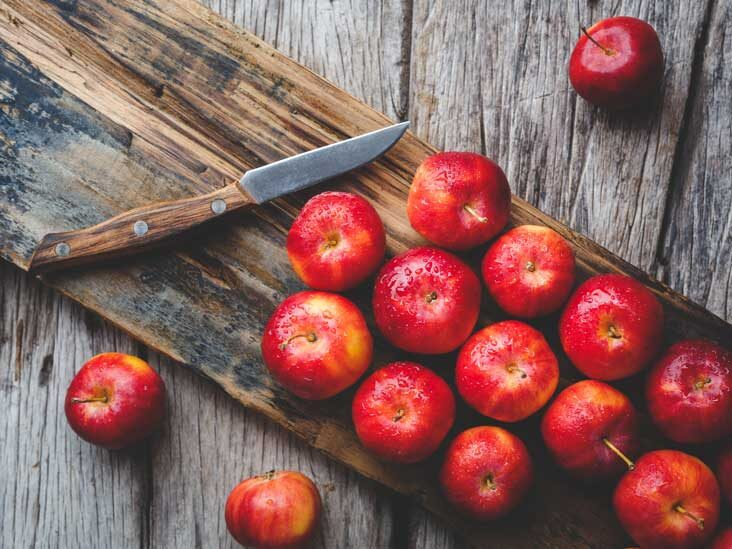
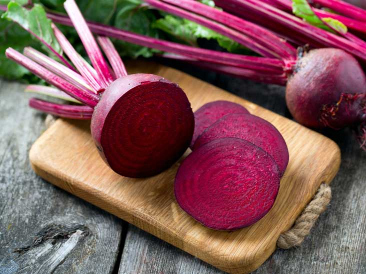

How to improve your digestion naturally?
Everyone experiences occasional digestive symptoms such as upset stomach, gas, heartburn, nausea, constipation or diarrhea.
However, when these symptoms occur frequently, they can cause major disruptions to your life.
Fortunately, diet and lifestyle changes can have a positive impact on your gut health.
Foods to improve digestion

Yoghurt

Apples

Fennel

Papaya

Beets

Ginger

Leafy vegetables

Peppermint